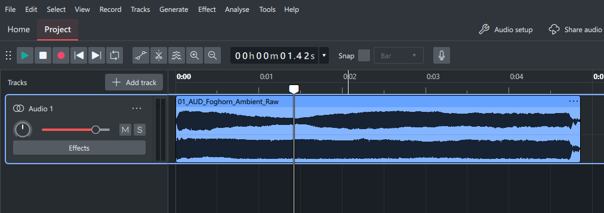
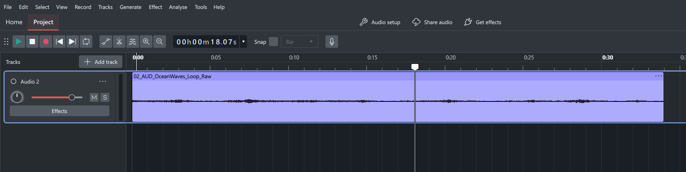
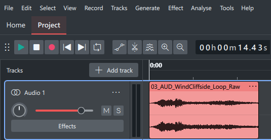
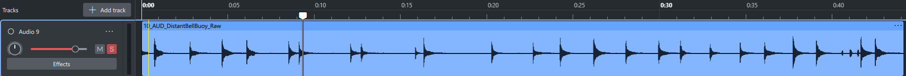
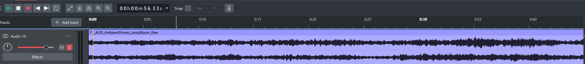
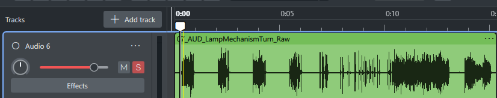
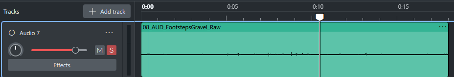
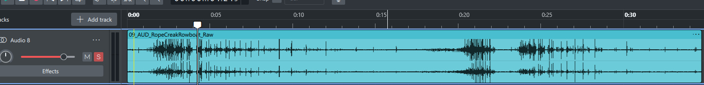

8 finished audio assets, each sourced from a raw recording (own field recordings or CC0 Freesound downloads — full licence/source list on the Asset Management page) and edited into a folio-ready clip. Two of the originally planned 11 (both Seagull Calls, Pier Wood Creak) were deliberately dropped: their raw sources were already isolated down to 0.4–2.2 seconds by the original uploader, leaving nothing meaningful left to edit in the software used here. The Scene Integration page shows 4 of the ambient beds below layered together into one mixed-down preview.
Ambient beds
Continuous, loopable background layers — each trimmed to a clean loop point with a short crossfade so it repeats without a click or gap.





Foley one-shots
Single non-looping sounds, trimmed tight around the moment itself.



Dropped from the original 11
Seagull Call 01, Seagull Call 02, and Pier Wood Creak were sourced (all CC0, logged on the Asset Management page) but not carried through to a finished edit. Their raw sources were already isolated single sounds at 0.4s, 0.7s, and 2.2s respectively — there wasn't a meaningful editing process left to perform or document on files that short in the software being used. 8 finished, fully-documented assets was judged the stronger submission over 11 including 3 where "editing" would have meant nothing more than re-saving the file unchanged.